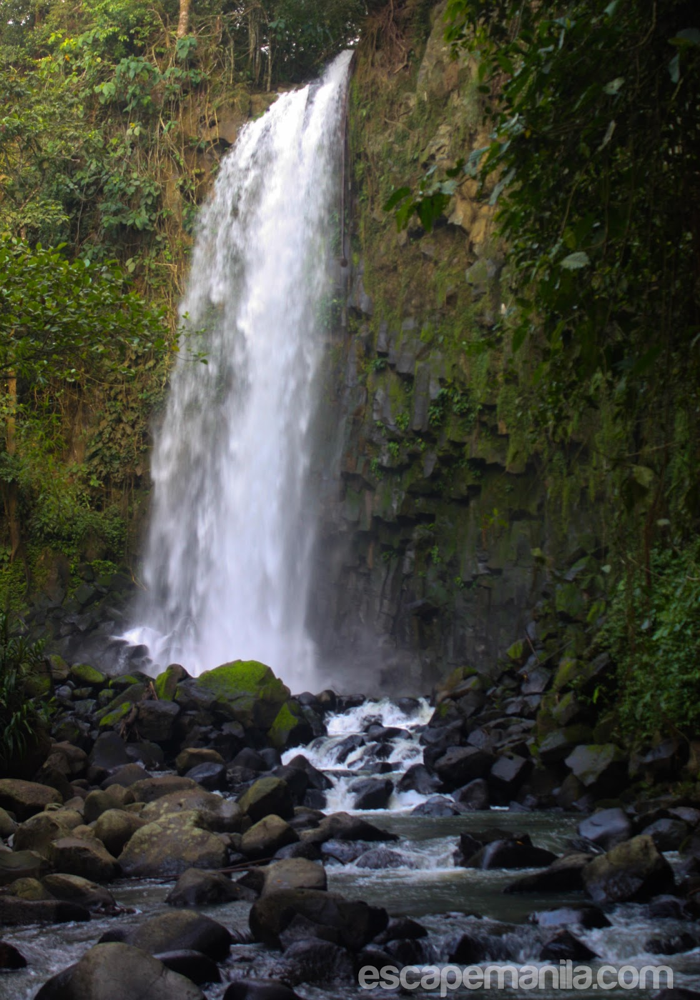
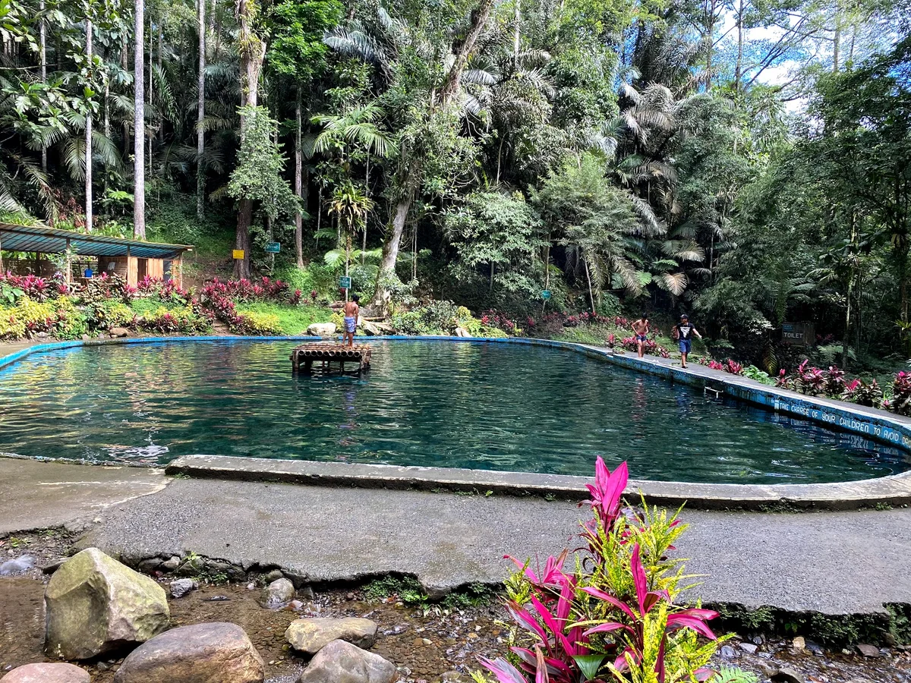

Gallery
CEDAR Falls in Photos




Center for Ecological Development and Recreation
CEDAR is a man-made forest development project that has evolved into one of Bukidnon's premier eco-tourism sites. Spanning over 1,700 hectares, it serves as a cold-spring sanctuary for those looking to escape into nature.
The park is most famous for its "Three Falls"—a series of cascades hidden within a lush trek through diverse tree species and natural springs.
The most accessible and widest among the three, perfect for a refreshing dip after a short hike.
A taller, more narrow cascade that offers a serene and photogenic atmosphere deeper in the forest.
Known for its unique rock formation shaped like a tongue ("Dila"), this is the most challenging but rewarding trek.


Wear non-slip hiking sandals or shoes. The trails can be slippery, especially near the river crossings.
As an ecological center, strict rules apply to trash. Bring your own reusable water bottles and take your waste back with you.
Visit during the morning (between 8 AM and 10 AM) to enjoy the falls before the afternoon crowds arrive.